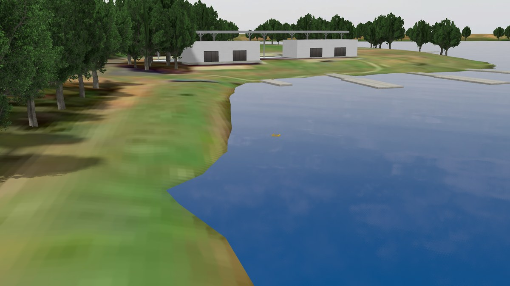
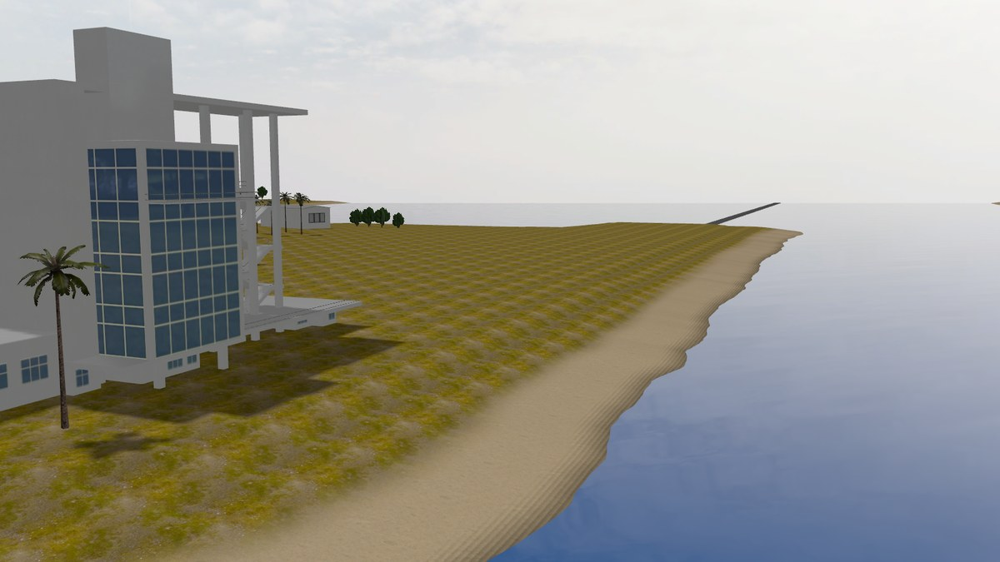
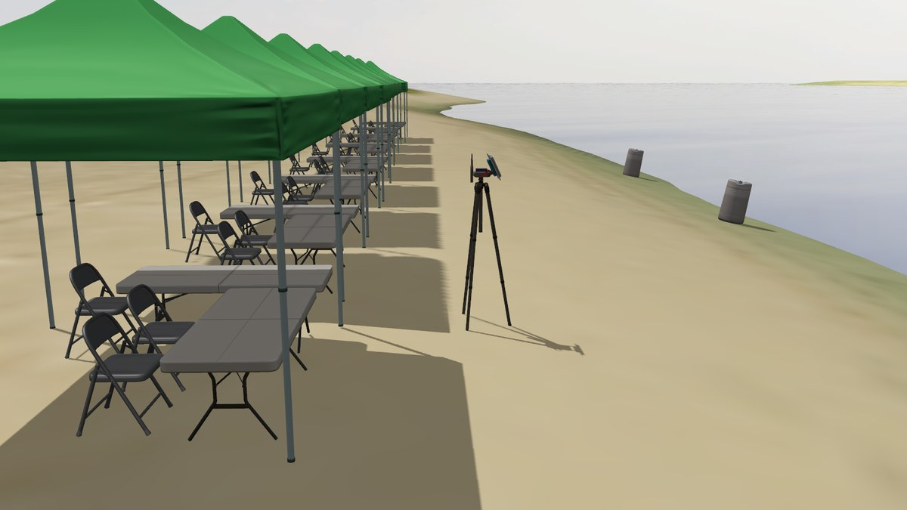
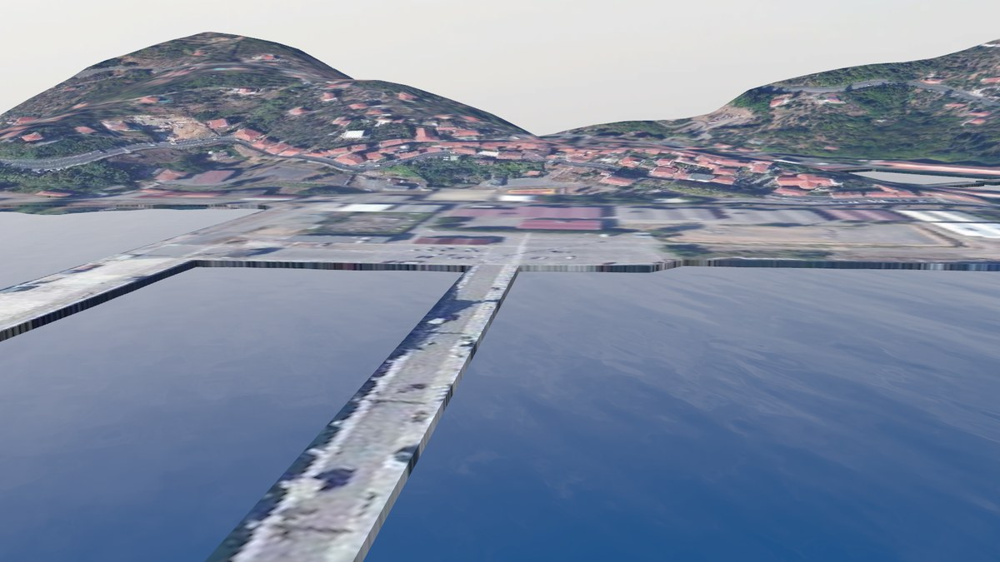

Sail the competition sites
Besides the open water world, gz-maritime ships four real venues: the three
sites of the Virtual RobotX competition (VRX) and the one of the Virtual
Ocean Robotics Challenge (VORC), adapted to this ocean. They keep the same
world contract as open_water.sdf, so every launch file, spawn command and
service works on them unchanged. Pass one to the simulation launch and
spawn a vehicle at the start point the site recommends:
ros2 launch kai_bringup simulation.launch.xml world:=sand_island.sdf
ros2 launch kai_bringup spawn_vehicle.launch.xml name:=boat_a x:=158 y:=108 yaw:=-2.76 \
xacro:=$(ros2 pkg prefix --share kai_custom_vehicle)/models/custom_usv/model.sdf.xacro \
bridge:=$(ros2 pkg prefix --share kai_custom_vehicle)/config/ros_gz_bridge.yaml.in \
urdf:=$(ros2 pkg prefix --share kai_custom_vehicle)/urdf/custom_usv.urdf.xacro
The custom USV’s own launch does both in one go: ros2 launch kai_custom_vehicle sim.launch.xml world:=sand_island.sdf x:=158 y:=108 yaw:=-2.76. Any other vehicle spawns the same way, see
Spawn and drive.
Every world is named default inside, whatever its file is called, so the
wave service and the other world services take the same path everywhere:
gz service -s /world/default/wave/set_parameters --reqtype gz.msgs.Param \
--reptype gz.msgs.Boolean --timeout 2000 \
--req 'params {key: "sea_state" value {type: INT32 int_value: 2}}'
The sea state goes from 0 (glassy) to 9, and each site says below which range fits its water. A rowing lake never sees more than wind chop, and a lagoon or a gulf at most a slight sea; higher codes are open sea and look wrong between shores.
Sydney International Regatta Centre

The Sydney Regatta world at its opening view.
The VRX venue from 2022 to 2024: the man made rowing course at Penrith
Lakes, near Sydney, with its pontoon, shore and buildings. The terrain is
the VRX model from Fuel, about 140 MB, downloaded the first time the world
loads and cached under ~/.gz/fuel.
Launch |
|
Start point |
|
Water |
A freshwater lake, flat and sheltered |
Sea states |
0 to 2 |
A landing pad sits off the start point, for the X500 of the multi vehicle demo, which runs here by default.
Nathan Benderson Park

The Benderson Park world at its opening view.
The RobotX 2022 venue in Sarasota, Florida: a man made rowing lake with its grandstand and island. The terrain is the VRX model from Fuel, about 220 MB, downloaded on first use like Sydney’s. The lake runs along y, so a vehicle at the origin heading 1.57 looks down the course.
Launch |
|
Start point |
|
Water |
A freshwater lake, flat and sheltered |
Sea states |
0 to 2 |
Sand Island

The Sand Island world at its opening view, from behind the shore camp.
The RobotX 2018 venue in Honolulu, Hawaii, as VRX 2019 modelled it: the
island shore on Keehi Lagoon, with the shore camp of the original world:
three mooring posts, the antenna and eight tents with their tables and
chairs. The terrain mesh comes from the VRX repository and is fetched by
the build, so it is there after colcon build; the camp models come from
Fuel on first use, a few megabytes.
Launch |
|
Start point |
|
Water |
A lagoon sheltered by the reef and the harbour |
Sea states |
0 to 3 |
La Spezia

The La Spezia world at its opening view, from over the gulf.
The VORC 2020 venue: the marina in the Gulf of La Spezia, Italy, with its breakwaters and quays. The terrain mesh comes from the VORC repository and is fetched by the build. Inside the breakwaters the water is calm; the gulf beyond them sees a slight sea at most.
Launch |
|
Start point |
|
Water |
The marina and the gulf |
Sea states |
0 to 2 in the marina, up to 3 in the gulf |
What to know
Terrain is solid. Every site’s terrain mesh is its collision too, so a vehicle driven into the shore grounds on it. The water has no floor: a sinking vehicle keeps sinking, as on open water.
The water is one model. Each site includes the water surface once, at the centre of its water, and sets
<tiles_radius>in its wave source to say how far the sea is drawn around it, in 200 m tiles; the terrain hides it wherever there is land. Buoyancy does not depend on the drawn water: vehicles float on the flat z = 0 plane everywhere.First use needs the network. The Sydney and Benderson Park terrains and the Sand Island camp come from Fuel the first time they load; after that they are cached. The Sand Island and La Spezia meshes are fetched by the build, so building gz-maritime needs the network once too.
Credits. The terrain models are Apache 2.0 assets from VRX and VORC, credited in
kai_gazebo/NOTICE.
The worlds table in the reference has the same facts in one place, and Use your own world explains the contract they share if you want to build a site of your own.